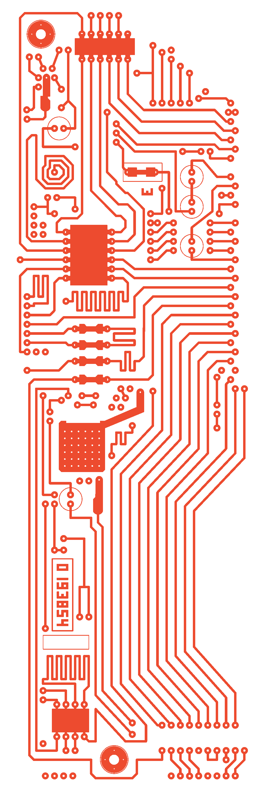
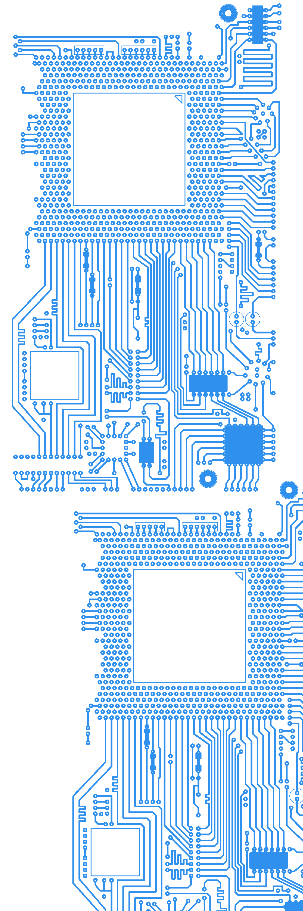
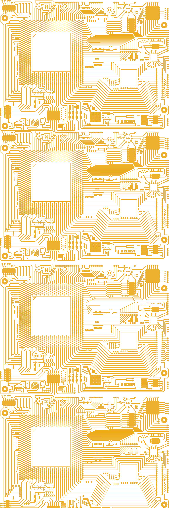
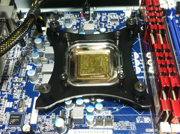
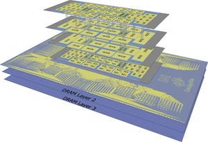

There’s a Supercomputer in Your Pocket
"Siri, where is the Sea of Tranquility?" People listening to transmissions from Apollo 11 in 1969 might have heard those words if there had been an iPhone aboard the spacecraft as it approached the Moon.
But iPhones didn't exist back then. The United States sent Apollo 11 astronauts to the Moon with a guidance computer that was two feet wide, weighed 70 pounds, had a processor speed of 2 MHz, 4 KB of memory (about 2,000 characters), power consumption of 55 watts and a cost of $150,000 ($938,000 in 2012 dollars). Today's Apple iPhone 5 is a little more than two inches wide, weighs 3.9 ounces, has a processor with a speed of 1.29 GHz (actual performance might be as much as 1,000 times faster), 1 GB of RAM, and power consumption of about 1 watt, all at a cost of about $200 ($32 in 1969 dollars).
Computers have come a long way in 40 years, and mobile computers have come the farthest in the shortest time — some of them are more powerful than early supercomputers. A tweaked Motorola Droid can hit speeds more than 15-times faster than the Cray-1 supercomputer of 1979. Apple's iPad 2 rivals the Cray 2 supercomputer, the world's fastest computer in 1985. What will smartphones look like in eight years? Jeff Bradley, a developer at AT&T, predicts they'll have 28 GHz of processing power, embedded storage of 64 terabytes and a 500 Mbps connection to the mobile data network. (Processing power of 28 GHz might be overly optimistic. The 2012 International Technology Roadmap for Semiconductors predicts that typical frequencies will still be under 6 GHz in 2020.)
Mobile devices have evolved from being very powerful computers to what we considered, just a few years ago, to be supercomputers, and they continue to hurry toward levels of performance that, just a decade ago, we didn't imagine would be possible.
U-M researchers will be tackling the end of Moore’s Law — and designing the computers of 2025 — at a new research center.
The use of smart phones to text, stream and surf the Web required engineers to develop blazing-fast processors. Power, speed and storage have increased steadily. But the demand for smaller phones and resource-hungry operations such as converting the information from a camera sensor to a JPEG, processing video or unpacking a compressed file are pushing the technology to its physical limits — there are a number of restrictions that prevent processors from working at full capacity.
Of those restrictions, the prominent two are excessive heat and sufficient power. Of those two, heat seems to be the bigger obstacle.
The faster the chip, the more power is required for operation, and battery technology hasn't kept pace with chip development. However, each increase in processing power requires more transistors on chips. Moore's Law, which has been accurate for 30 years, predicts that the number of transistors that can economically be manufactured on a chip doubles every 18 months. However, Moore's is running out of steam. In particular, power efficiency has not kept pace with the doubling. As a result chips are becoming less energy-efficient and produce excessive heat.
This presents a problem. Whereas desktops and laptops have space for fans to move air in and out to cool their chips, mobile devices such as smart phones, tablets and e-readers simply don't have room for fans. If left uncooled, transistors can overheat, melting themselves and surrounding components — chips hit "the power wall." To prevent this, some of the transistors have to be powered off at any given time. These inactive transistors are known as "dark silicon."
Tom Wenisch is the Morris Wellman Faculty Development Assistant Professor of Computer Science and Engineering. He and a team of engineers from the University of Michigan and the University of Pennsylvania have proposed a solution.
"Currently, processors are designed for sustained performance; that is, they turn on and run full tilt and don't stop. Logic would say that, to decrease the heat, you would need to use fewer transistors on a chip. But, if you think about how you use a phone, you don't need it to run full tilt forever; you want it to run as fast as possible when you click a button, but then go to sleep. Instead of cutting down transistors, our scheme is to put more transistors on a chip, but use them only when they're needed to give a short performance boost — while the phone user is waiting. When they complete their tasks, they turn off and cool down until they're needed again. We call this technique 'computational sprinting.'"
Most of today's smartphones don't have chips with 16 processors. "Existing batteries can't supply enough power to run 16 cores at once, even if we wanted them all to be active," Wenisch said. "So, to make chips that can sprint, we augment the battery with a super-capacitor that, like an old fashioned camera flash, charges up to prepare for a sprint. Then, when a performance boost is needed, the processor draws power from both the battery and the super-capacitor. This lets us run all 16 cores, improving the device's response time ten-fold."
The team is working to deliver as much computing horsepower as possible in 300 milliseconds. "That's short enough to go unnoticed," Wenisch said.

A phase-change heatsink absorbs heat and holds temperature at a constant level, letting the chip sprint longer.
Wenisch also has been testing a material — something like candle wax — to create a phase-change heatsink. "As the material melts, or changes phase, it absorbs a huge amount of heat and holds the temperature at a constant level, letting the chip sprint longer," Wenisch said. "As the processor slowly cools off, the material cools, too, to get ready for the next sprint. The materials we are studying now will last for the life of the chip."
Work on heat dissipation is ongoing elsewhere. IBM researchers have been working on a chip that's cooled AND powered by fluid. The investigators stack hundreds of silicon wafers on top of each other to create three-dimensional processors, which are dense but have relatively little surface area for cooling. To solve that problem, engineers run a pair of fluidic networks between each layer. One carries in charged fluid to power the chip, the second carries away the same fluid after it has picked up heat from the active transistors — in essence, the system is a microfluidic radiator. Researchers got the idea by studying the human brain, which is 10,000-times denser than any computer processor. The brain's network of capillaries and blood vessels transports heat and energy, all at the same time, to achieve efficiency.
Back at Michigan Engineering, lower heat emissions were a serendipitous product of work done to create chips that are smaller, faster and low-cost. Wei Lu, an associate professor in the Department of Electrical Engineering and Computer Science, and his team built a chip composed of nanoscale memristors, computer components that offer both memory and logic functions, and make it possible to achieve their objective: Chips that are smaller, faster and low-cost. The team also found that memristors require less energy to operate and, consequently, they produce less heat. Their memory function works even when current is not passing through them, in which case no heat is generated. Furthermore, memristors have the potential to power handheld devices with 10-times the embedded memory possible today.
Experimenting with ultra-low-power mobile chip architectures has become a major area of interest not only because chips of this type produce less heat, but also because they make it possible to squeeze more FLOPS (a measure of computer performance) out of their machines.
Trevor Mudge is the Bredt Family Professor of Electrical Engineering and Computer Science and the co-founder of Michigan Engineering's Advanced Computer Architecture Lab (ACAL). He said that developing mobile supercomputers will "require rethinking the way we design computers. Rather than worrying solely about performance, with the occasional nod to power consumption and cost, we need to judge computers by their performance-power-cost. This new way of looking at processors will lead us to new computer architectures and new ways of thinking about computer system design."

The Centip3De ("centipede") consists of chips stacked in a three-dimensional structure to save power and space.
He and Electrical Engineering and Computer Science professors David Blaauw and Dennis Sylvester have developed Centip3De ("centipede"), a chip that consists of chips stacked in a three-dimensional structure to save power and space. This move to the third dimension opens up an entirely new design paradigm. In addition, they have pioneered near-threshold computing (NTC). The goal is to run a processor at a very low voltage to consume less energy — without giving up performance. Just as computational sprinting activates processors only when a performance boost is needed, a Centip3De chip uses just enough power — but no more — to operate transistors correctly. That is, there's a voltage tipping point — below it, transistors continue to work correctly but get exponentially slower as voltage drops. The objective of NTC is to hit the "sweet spot," where voltage is low but transistor speed is still useful.
"If you can lower voltage supply by 40 percent, you get an 80 to 90 percent reduction in energy consumption," Mudge said. "However, at low power, transistors work slowly. We want Centip3De to run as fast as it can at low voltage, because key processes must run quickly."
To understand more, it's helpful to know a couple of basics about processors. In a parallel computation, there might be 20 people (processors), each assigned to solve one piece of a problem. If these people can work in parallel, the task can be completed quickly even if the people operate slowly and consume less power. So, with a greater number of people (processors) working even at low power (and, consequently, more slowly), a group can usually complete an operation more quickly while saving power.
Problems arise when a computation hits a congestion point and parallel operation is no longer possible. Mudge and his team are also working on smoothing out congestion points — points where data flow hits a bottleneck. "A computer's performance is constricted by its lowest-performing part. If you have a million processors running in parallel but one element is slow, then everything on the highway will slow down."
Another one of the Mudge team's energy-efficiency projects resulted in the Intelligent Energy Manager (IEM) system. This concept, conceived by British company ARM Holdings and designed into some of their processors, allows mobile phones to automatically self-adjust their battery usage.
Intel is developing a 48-core processor for smartphones and tablets, an architecture that would allow a device to distribute tasks among the different parts of the chip, making the processor faster and more power-efficient, boosting mobile performance farther into the realm of supercomputers.
The entire industry is poised to make an unprecedented leap. Some engineers predict that, in the next five years, next-gen mobile supercomputers — smartphones, tablets, e-readers — will run people's homes remotely (even water the plants). They'll oversee personal fitness programs and send continuous streams of health information to doctors, securely, in real time. They'll accommodate augmented reality (travelers could, for example, point a phone down a city street anywhere in the world, and an overlay of nearby historic landmarks, restaurants and hotels would appear). Paper-thin flexible screens will fold out from pocket-size devices to become large screens on which to watch movies and play games. Holograms will hover above screens. Voice-recognition systems will interpret diction and syntax rather than just dumbly recognize sound waves.
What will happen 10 years from now is anyone's guess. A good suggestion is to wait out the next five years and then ask Siri.

There are a number of restrictions that prevent processors from working at full capacity. Of those restrictions, the prominent two are excessive heat and sufficient power. Of those two, heat seems to be the bigger obstacle.

If left uncooled, transistors can overheat, melting themselves and surrounding components — chips hit "the power wall." To prevent this, some of the transistors have to be powered off at any given time. These inactive transistors are known as "dark silicon."
Memristors require less energy to operate and, consequently, they produce less heat. Their memory function works even when current is not passing through them, in which case no heat is generated.
A computer's performance is constricted by its lowest-performing part. If you have a million processors running in parallel but one element is slow, then everything on the highway will slow down.
{kind=link}
{kind=link}